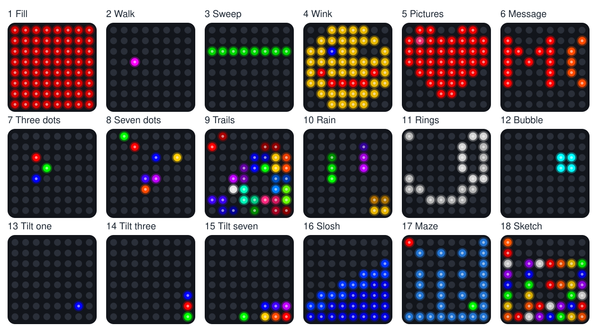

Lab 19: Demo Mode
Pixel says...
 Time to show off everything you built! One program runs all 18 shows and games.
It can even start by itself when the kit gets power. Let's light this up!
Time to show off everything you built! One program runs all 18 shows and games.
It can even start by itself when the kit gets power. Let's light this up!
Program files: 19-template-main.py and five demo modules:
fill_colors.py,
walk_pixels.py,
row_column_sweep.py,
winking_face.py, and
accel_bubble.py
Printable guide: the Demo Mode Guide (PDF) shows and explains all 18 modes on one page. Print it and set it next to your kit. There is also a web version.
What you'll learn
- How one program can run every show and game in the kit
- Why
sleep()cannot notice a button press, and howkit.wait()can - How a file named
main.pymakes the Pico start a program by itself - How
tryandexceptkeep a show running when a part stops answering - How to choose which modes your own demo shows
What you'll need
- Your whole kit: the matrix, the accelerometer, and both buttons, wired as shown in the Kit Guide
- Every
.pyfile from the kit folder saved on the Pico. The quickest way is./upload-code.sh(see Get the Code onto the Pico) - Thonny open and connected to your Pico
- A USB wall charger, like a phone charger, if you want the demo to run without a computer. Many power banks switch themselves off with this kit (see the warning in Make the kit start by itself)
- Ideas from Lab 18: Modes
The program
This program is a bigger mode machine. It works like Lab 18, but it holds every show and game from Labs 5 to 18.
# Lab 19: Demo Mode
# Filename: 19-template-main.py
# Version: 1.0.0
#
# Every show and game in the kit in one program, for showing the kit off.
# Press button 1 (GPIO 14) for the next mode and button 2 (GPIO 15) for the
# previous one. The matrix shows the mode number for a moment, then the
# mode starts.
#
# Mode Show From program
# 1 fill colors 05
# 2 walk the pixels 06
# 3 row and column sweep 08
# 4 winking face 09 and 11
# 5 picture show 10
# 6 scrolling message 12
# 7 three slow bouncing dots 18
# 8 seven faster bouncing dots 18
# 9 twelve colors that leave small trails 18
# 10 rainbow rain 18
# 11 ripple rings 18
# 12 a bubble that slides as you tilt 14
# 13 one dot that rolls as you tilt 18
# 14 three dots that roll as you tilt 18
# 15 seven dots that roll as you tilt 18
# 16 sloshing water 15
# 17 tilt-a-maze 16
# 18 tilt-a-sketch: tilt to draw 17
#
# Modes 1 to 11 do not use the tilt, and modes 12 to 18 do. Programs 01 to
# 04 and 07 are wiring checks and 13 only prints numbers, so they are left
# out. The buttons change modes here, so the sketch in mode 18 cannot use
# them: its pen changes color by itself, and a shake still erases.
#
# This program is a template for main.py. The Pico runs main.py by itself
# when it powers up, so save a copy on the Pico as main.py and the demo
# starts with no computer. Use a wall charger: many power banks switch off
# when the kit draws only a little current. Thonny's Stop button stops it.
#
# It works like program 18: each mode is a module that is loaded only when
# you switch to it and thrown away when you leave. Add a mode by writing a
# module with a run(settings) function and adding a line to MODES.
# Tried by hand on 2026-10-22: the buttons change modes, and it starts as main.py.
import sys
import gc
import kit
print("Lab 19: Demo Mode (version 1.0.0)")
MODE_NUMBER_MS = 700 # how long the mode number shows before the mode starts
# (name, module to load, settings handed to the module's run() function)
MODES = [
# shows that do not use the tilt
("Fill colors", "fill_colors", None),
("Walk the pixels", "walk_pixels", None),
("Row and column sweep", "row_column_sweep", None),
("Winking face", "winking_face", None),
("Picture show", "picture_show", None),
("Scrolling message", "scroll_text",
{"text": "MOVING RAINBOW!", "speed": 9}),
("Three dots", "bounce_dots",
{"colors": [kit.RED, kit.GREEN, kit.BLUE], "speed": 2.5, "fade": 0}),
("Seven dots", "bounce_dots",
{"colors": kit.RAINBOW, "speed": 4, "fade": 0}),
("Colors with trails", "bounce_dots",
{"colors": kit.PALETTE, "speed": 5, "fade": 215}),
("Rainbow rain", "rain", None),
("Ripple rings", "rings", None),
# shows and games that use the tilt
("Accelerometer bubble", "accel_bubble", None),
("Tilt one dot", "tilt_balls",
{"colors": [kit.BLUE]}),
("Tilt three dots", "tilt_balls",
{"colors": [kit.RED, kit.GREEN, kit.BLUE]}),
("Tilt seven dots", "tilt_balls",
{"colors": kit.RAINBOW}),
("Sloshing water", "sloshing_water", None),
("Tilt-a-maze", "tilt_a_maze", None),
("Tilt-a-sketch", "tilt_a_sketch",
{"auto_color": True}),
]
def unload(module_name):
# forget the module so its memory can be reused by the next mode.
# The picture gallery is big, so forget it too if a mode loaded it.
for name in (module_name, "pictures"):
if name in sys.modules:
del sys.modules[name]
gc.collect()
kit.mode_buttons_on = True
mode = 0
while True:
name, module_name, settings = MODES[mode]
print("Mode", mode + 1, "-", name, "(module " + module_name + ")")
step = 1
module = None
try:
# a button press during any wait() raises kit.ModeChange
kit.draw_text(str(mode + 1))
kit.wait(MODE_NUMBER_MS)
module = __import__(module_name)
print(" RAM free:", gc.mem_free(), "bytes")
module.run(settings)
except kit.ModeChange as change:
step = change.args[0]
module = None # let go of the module, then forget it
kit.clear()
kit.strip.write()
unload(module_name)
mode = (mode + step) % len(MODES)
Run it. A 1 appears on the matrix, then all 64 pixels fill with red. Press Button 1 (GP14) for the next mode and Button 2 (GP15) to go back. The Shell names each mode as it loads:
Lab 19: Demo Mode (version 1.0.0)
Mode 1 - Fill colors (module fill_colors)
RAM free: 200816 bytes
Mode 2 - Walk the pixels (module walk_pixels)
RAM free: 209344 bytes
The RAM free number depends on your Pico. Here is one moment from each of the 18 modes:

These pictures were drawn by a computer simulator running the real code, so your real matrix may look a little different.
| Mode | Show | From | Uses the tilt? |
|---|---|---|---|
| 1 | Fill colors | Lab 5 | No |
| 2 | Walk the pixels | Lab 6 | No |
| 3 | Row and column sweep | Lab 8 | No |
| 4 | Winking face | Lab 9 and Lab 11 | No |
| 5 | Picture show | Lab 10 | No |
| 6 | Scrolling message | Lab 12 | No |
| 7 | Three slow bouncing dots | Lab 18 | No |
| 8 | Seven faster bouncing dots | Lab 18 | No |
| 9 | Twelve colors with trails | Lab 18 | No |
| 10 | Rainbow rain | Lab 18 | No |
| 11 | Ripple rings | Lab 18 | No |
| 12 | Accelerometer bubble | Lab 14 | Yes |
| 13 | One dot that rolls as you tilt | Lab 18 | Yes |
| 14 | Three dots that roll and bump | Lab 18 | Yes |
| 15 | Seven rainbow dots that roll and bump | Lab 18 | Yes |
| 16 | Sloshing water | Lab 15 | Yes |
| 17 | Tilt-a-maze | Lab 16 | Yes |
| 18 | Tilt-a-sketch | Lab 17 | Yes |
Labs 1 to 4 and Lab 7 check your wiring, and Lab 13 only prints numbers, so the demo leaves them out.
How it works
The same mode machine as Lab 18
This list is the whole menu:
# (name, module to load, settings handed to the module's run() function)
MODES = [
# shows that do not use the tilt
("Fill colors", "fill_colors", None),
("Walk the pixels", "walk_pixels", None),
("Row and column sweep", "row_column_sweep", None),
("Winking face", "winking_face", None),
("Picture show", "picture_show", None),
("Scrolling message", "scroll_text",
{"text": "MOVING RAINBOW!", "speed": 9}),
("Three dots", "bounce_dots",
{"colors": [kit.RED, kit.GREEN, kit.BLUE], "speed": 2.5, "fade": 0}),
("Seven dots", "bounce_dots",
{"colors": kit.RAINBOW, "speed": 4, "fade": 0}),
("Colors with trails", "bounce_dots",
{"colors": kit.PALETTE, "speed": 5, "fade": 215}),
("Rainbow rain", "rain", None),
("Ripple rings", "rings", None),
# shows and games that use the tilt
("Accelerometer bubble", "accel_bubble", None),
("Tilt one dot", "tilt_balls",
{"colors": [kit.BLUE]}),
("Tilt three dots", "tilt_balls",
{"colors": [kit.RED, kit.GREEN, kit.BLUE]}),
("Tilt seven dots", "tilt_balls",
{"colors": kit.RAINBOW}),
("Sloshing water", "sloshing_water", None),
("Tilt-a-maze", "tilt_a_maze", None),
("Tilt-a-sketch", "tilt_a_sketch",
{"auto_color": True}),
]
Each item names a mode, the module to load, and the settings to hand it. The loop after the list is the same loop as in Lab 18. It shows the mode number, loads the module with __import__, and calls its run function. A button press raises ModeChange, and the loop unloads the module and moves on. Lab 18 explains each step in How it works.
Why the early labs need a demo version
Labs 5 to 14 each set up their own hardware and pause with sleep(). Here is the loop from Lab 5:
while True:
for name, color in colors:
print("Fill:", name)
for i in range(NUMBER_PIXELS):
strip[i] = color
strip.write()
sleep(1.5)
During sleep(1.5), the Pico waits for one and a half seconds and looks at nothing else. A button press in that time goes unnoticed. The loop also never ends, so a mode machine could never get control back.
So each early lab in the demo has a demo version. A demo version is a module that does the same thing, but uses kit.py and pauses with kit.wait(). Here is the demo version of Lab 5:
# Module: Fill Colors (the demo version of program 05, used by program 19)
# Filename: fill_colors.py
# Version: 1.0.0
#
# Fills all 64 pixels with red, green, blue and white in turn, like
# program 05. It sleeps with kit.wait() in place of sleep(), so a press of
# a mode button in program 19 stops it right away. It does not use the tilt.
import config
import kit
# every pixel is lit at once, so the color numbers stay small
LEVEL = config.LEVEL
HOLD_MS = 1500 # how long each color stays
COLORS = [
(LEVEL, 0, 0), # red
(0, LEVEL, 0), # green
(0, 0, LEVEL), # blue
(LEVEL, LEVEL, LEVEL), # white
]
def run(settings=None):
while True:
for color in COLORS:
for i in range(kit.NUMBER_PIXELS):
kit.strip[i] = color
kit.strip.write()
kit.wait(HOLD_MS)
Compare the two loops. The colors and the timing match, but sleep(1.5) became kit.wait(HOLD_MS). You met kit.wait() in Lab 18. It sleeps in 10 millisecond pieces and checks the buttons after each piece, so a press stops the show right away.
| Lab | Its demo version |
|---|---|
| Lab 5: Fill Colors | fill_colors.py |
| Lab 6: Walk the Pixels | walk_pixels.py |
| Lab 8: Row and Column Sweep | row_column_sweep.py |
| Labs 9 and 11: Smiley Face and Winking Face | winking_face.py |
| Lab 14: Accelerometer Bubble | accel_bubble.py |
The labs themselves stay the same, so each one still reads from top to bottom on its own. Labs 10 and 12 need no new module, because Lab 18 already has picture_show.py and scroll_text.py. Labs 15, 16, and 17 already keep their code in modules.
Key idea
A program only notices a button while it is checking for one. Pausing in small pieces keeps it listening.
Sharing the buttons
This item in MODES starts the sketch from Lab 17:
("Tilt-a-sketch", "tilt_a_sketch",
{"auto_color": True}),
In Lab 17, Button 1 changes the pen color and Button 2 lifts the pen. In the demo, both buttons change modes, so the sketch leaves them alone. The setting "auto_color": True moves the pen to the next color with every step instead. Your line comes out in rainbow stripes, and a hard shake still erases it.
When the tilt sensor stops answering
The tilt sensor talks to the Pico over the wires on GP16 and GP17. If one of its four wires loses contact, even for a moment, a reading fails. Python then raises an OSError. That is an error that means a piece of hardware did not answer.
Here is how kit.py reads the sensor:
global last_tilt
if not sensor_answering:
setup_sensor() # it may have lost power, so turn it on again
try:
raw = i2c.readfrom_mem(ACCEL_ADDRESS, ACCEL_DATA_REGISTER, 6)
except OSError:
sensor_lost()
return last_tilt
try means "try these lines." except OSError means "if the sensor did not answer, do this instead." Then read_tilt hands back last_tilt, the last good reading, and the show keeps going. The function sensor_lost prints one message in the Shell:
The tilt sensor is not answering. Check its wires: GP16, GP17, 3V3 and GND.
On the next reading, kit.py tries to turn the sensor on again. When it answers, the Shell says The tilt sensor is answering again. If you see the first message, press each of the sensor's four wires in firmly.
Make the kit start by itself
When the Pico gets power, MicroPython looks for a file named main.py. If it finds one, it runs it right away, with no computer and no Thonny. That is why this program is a template: a starting file that you copy and save under a new name.
Follow these steps in Thonny:
- Open
19-template-main.py. - Choose File > Save as, then pick Raspberry Pi Pico.
- Type the name
main.pyand click OK. - Unplug the kit from your computer.
- Plug it into a USB wall charger, like a phone charger.
In a moment you should see a 1 on the matrix, then the red fill. The demo is running all by itself!
The brightest mode, Fill colors, draws about 300 mA, so any phone charger has plenty of power.
Power banks that switch themselves off
Many power banks turn themselves off when a device draws only a little current (the flow of electricity). They do this on purpose. When a phone is full, it stops drawing current, and the power bank switches off to save its battery.
This kit often draws only a little current. In modes like Walk the pixels or Tilt one dot, only a few dim pixels are lit. The power bank decides nothing is plugged in, so after a short time it switches off and the matrix goes dark.
- Use a USB wall charger instead. It stays on however little power the kit uses.
- Some power banks have a low-current mode, made for earbuds and watches. Check its instructions to learn how to turn that mode on.
- Press the power bank's button to turn it back on. The demo starts over at mode 1.
Plug the kit back into your computer, and the demo keeps running. Click Thonny's red Stop button to stop it. To turn off the self-start, rename main.py. Type this line into the Shell and press Enter:
import os; os.rename("main.py", "main-off.py")
Now the Pico finds no main.py the next time it starts, so it waits for Thonny again.
Try it yourself
- Visit all 18 modes with Button 1. Then press Button 2 on mode 1. Which mode comes up? Why?
- Make a short demo of your five favorite modes. Remove the other items from
MODES. An item is the line with its name, plus the settings line under it if it has one. How many modes does Button 1 step through now? - Put your name in lights. In mode 6, change
"MOVING RAINBOW!"to your own words. Use capital letters. - Change
MODE_NUMBER_MS = 700toMODE_NUMBER_MS = 2000. What changes when you switch modes? - Save your favorite version as
main.pyand power the kit from a wall charger. Show it to a friend, and hand them the printed Demo Mode Guide.
Check your understanding
- Why can't the demo load
05-fill-colors.pyas a mode the way it is? - What does
kit.wait()do thatsleep()does not? - What does the Pico do when it powers up and finds a file named
main.py? - Why does the pen in mode 18 change color by itself?
- What happens in a tilt mode if the sensor misses one reading?
Kit complete!
 You turned 18 programs into one show that starts by itself! Print the guide, set out your kit,
and let your friends press the buttons. You are a real light-maker now.
You turned 18 programs into one show that starts by itself! Print the guide, set out your kit,
and let your friends press the buttons. You are a real light-maker now.
What's next: Share your demo at a club night or science fair, or head to the Hands on Labs to learn more patterns for LED strips.